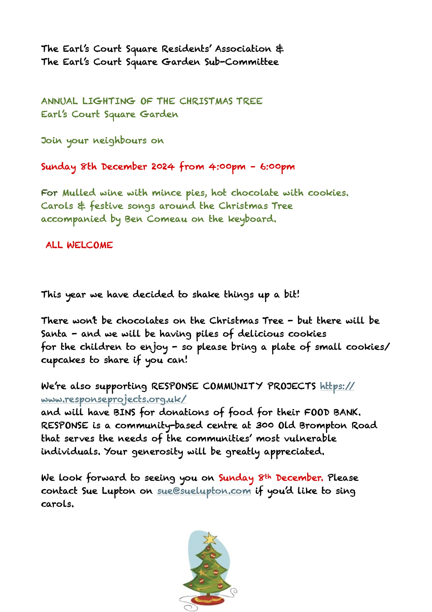

EARL'S COURT SQUARE GARDEN
Established under the Kensington Improvement Act 1851
• EVENTS & CALENDAR •
GARDEN EVENTS
ANNUAL GENERAL MEETING
Wednesday 15 January 2025 at St. Cuthbert’s Church, 50 Philbeach Gardens, SW5 9EB
Meeting time and agenda to be announced here soon
The AGM of Earl's Court Square Garden Committee will be held in accordance with the Kensington Improvement Act 1851
Please e-mail AGM@ecsgarden.org.uk to receive papers in advance
AGM attendance criteria
Only garden committee members are entitled to attend and vote at the AGM
Who is a garden committee member
Garden Committee members are those liable to pay the Garden Charge with their Council Tax for any dwelling facing the garden AND who have been resident for at least a year
Do I need evidence of membership to attend the AGM?
• Garden Chargepayers who have held a garden key for two years or longer will be on our members register and do not need to bring evidence of garden committee membership
• Garden chargepayers who have NOT held a registered garden charge payer key for at least two years must bring their 23-24 and 24-25 council tax bill (ppaer or digital copy) to confirm eligibility to attend the AGM or they may be refused admittance
Please note that residents who do not pay the garden charge (who live in the arms of the square, including subscribers) may not attend the AGM
LONDON OPEN GARDENS WEEKEND
7th-8th June 2025
Tickets and more information available online from London Parks & Gardens.
ECSRA SUMMER BBQ/PARTY
Saturday 21st June 2025
LIGHTING OF THE CHRISTMAS TREE 2025
Sunday 7th December 2024
GARDEN CALENDAR
PAST EVENTS 2024
Garden Committee Annual General Meeting 2024
The AGM was held in person at St. Cuthbert's with St. Mathias School, Warwick Rd on Tuesday 17 January 2023 at 7.15 pm.
The AGM of Earl's Court Square Garden Committee was held in accordance with the Kensington Improvement Act 1851 and only Garden Charge Payers who were resident in the Square more than one year were eligible to attend and vote.
Katrina Quinton was re-elected as Chairman. The annual budget was presented and approved. Anastasia Bouvier stepped down as a member of the Sub-Committee and Secretary. The remaining sub-committee were re-elected, Hossam Alsaady was elected as a new member of the sub-committee and Anne-Francoise Castigilioni was co-opted into the sub-committee.
Download the Chairman's report for 2023
RSPB Big Garden Bird Watch, 26th-28th January 2024
Residents signed up and took part in the RSPB's Big Garden Birdwatch, the world's largest wildlife survey. Spending an hour in the garden, their balcony or even the local park between Friday 26th and Sunday 28th January they recorded the birds they saw using the RSPB's handy guide and tally chart then shared results with RSPB.
London Open Gardens, 8th-9th June 2024
London's private, secret and little-known gardens across the city opened for a special weekend presented by London Parks & Gardens.
Gardens ranged from the historic and traditional to the new and experimental, and included private gardens, roof gardens, community allotments, gardens belonging to historic buildings, institutions, cafes, schools and shops.
As usual Earl's Court Square Garden participated both days from 10am - 5pm with live strings musical performances and poetry readings in the afternoon.
ESCRA Annual Summer BBQ & Disco
5-11pm, 22nd June 2024
DJ: Jerry Shillingworth
BBQs were provided (including Vegetarian and "no pork" BBQs). Attendees bought their own food and drink
Pay on Door: Adults £5, Children 10-18 £1.50, Under 10 Free.
All were welcome
Key Audit 2024
Residents who pay the Garden Charge within their council tax were required to confirm continued eligibility for key fob access by 15th August 2024. Emails from keys@ecsgarden.org.uk were sent with more information.
See Access page for info about how to do this online NOW if you missed the audit.
The Subcommittee assumed that anyone listed on the Garden Charge-payer register who did not respond in any way by 15th August was no longer resident and their key was deactivated.
(Garden Charge-payers who had already supplied copies of their current council tax bill for a new or replacement fob in 2024 did not need to take part in the 2024 Audit.)
Garden Subscribers who paid an annual license did not need to do anything.
Open Air Film Night 7-9.30pm, Thursday 5th September 2024

Four Weddings and a Funeral.
(Open to public ticket purchase)
Best costumes won prizes.
Drinks and Refreshments were available on the day (cashless) to raise money for The Earl's Court Community Trust.
Lighting the Christmas Tree 2024
4-6pm, Sunday 8th December 2024
In the Garden with mulled wine, mince pies, hot chocolate with cookies. Carols and festive songs around the Christmas Tree accompanied by Ben Comeau on the keyboard.

PAST EVENTS 2023
Garden Committee Annual General Meeting 2023
The AGM was held in person at St. Cuthbert's with St. Mathias School, Warwick Rd on Thursday 19 January 2023 at 7.15 pm.
The AGM of Earl's Court Square Garden Committee was held in accordance with the Kensington Improvement Act 1851 and only Garden Charge Payers who were resident in the Square more than one year were eligible to attend and vote.
Katrina Quinton was re-elected as Chairman. The annual budget was presented and approved unanimously. The existing sub-committee were re-elected.
Download the Chairman's report for 2022
Coronation Celebration with brass band
3.30pm-5pm Saturday 6th May 2023
4:45PM Children's Fancy Dress Pageant with prizes for best King and Queen.
Tea and coffee was provided.
All were welcome.
London Open Gardens
10th-11th June 2023, 10am-5pm both days
A very special weekend presented by London Parks & Gardens.
Gardens ranged from the historic and traditional to the new and experimental, and included private gardens, roof gardens, community allotments, gardens belonging to historic buildings, institutions, cafes, schools and shops. As usual Earl's Court Square Garden participated both days.
Music was performed in the afternoons 2pm-5pm.
ESCRA Annual Summer BBQ & Disco
5-11pm, 24th June 2023.
New Playground Equipment Installed
The Garden Subcommittee placed an order with ESP Playgrounds for a new play frame to replace the old structure. The work to remove the old and install the new took place in July 2023.

Open Air Film Night
7th September 2023. Breakfast at Tiffany's.
Macmillan Coffee Morning
10am to midday, Thursday 19th October 2023.
Thanks to everyone who turned up and helped raise £150 for Macmillan with the ‘Bring and Buy’ table for unwanted gifts while enjoying refreshments.
Leaf Raking Party 2023
3-4pm Sunday 26th November 2023.
A great success and hard work raking autumn leaves. Hot chocolate, tea, coffee and sausage rolls were provided.
Annual Christmas Tree Lighting with ECSRA
4pm-6pm Sunday 10th December 2023.
A lovely event in the garden organised with the Residents Association where all enjoyed carols, mulled wine, mince pies and treats from the tree for the children once the lights went on to invoke a sense of Christmas Cheer and good will.
PAST EVENTS 2022
Garden Committee Annual General Meeting 2022
A general meeting of the garden committee was held on Tuesday 18th January 2022 via Zoom for purposes of annual vote under Kensington Improvement Act on the 2022 Budget and Garden Levy. The budget presented and approved unanimously was for an unchanged Garden levy.
ECSRA History of the Square Walk
Walks were held on Sunday 6 March 2022 at 10:00 and 11:00 in the garden with refreshments. Christine Powell, who led the walks with Sue Lupton, has written an article about "The Architecture of Earl's Court Square". See ECSRA's website to read the article.
The Big Jubilee Lunch
Queen's Platinum Jubilee "Bring a Plate" Afternoon Tea with musical entertainment. An ECSRA and ECS Garden Committee event 3pm - 4.30pm on Sunday 5th June 2022. A brass quintet, tea & coffee.
London Open Gardens Weekend
Open Gardens returned with over 100 usually-closed gardens opening to the public. Gardens ranged from the historic and traditional to the new and experimental, and included private gardens, roof gardens, community allotments, gardens belonging to historic buildings, institutions, cafes, schools and shops.
Earl's Court Square Garden participated both days, 10am-5pm Saturday/Sunday 11-12th June 2022, with music both afternoons.
This year, instead of a printed guide book, all information moved online in order to produce an environmentally sustainable event.
ECSRA Annual BBQ/Disco
Saturday 9th July 2022, 5pm-11pm. DJ Jerry Shilingford.
CANCELLED ON THE NIGHT - Open Air Film Night
Breakfast At Tiffany's
19:00-21:30 Thursday 8th September 2022.
Garden Club!
Sunday morning fun for parent and child 2021 - summer 2022.
ECSRA lighting the Christmas Tree
Sunday 11th December 2022, 4-6pm
PAST EVENTS 2021
Garden Committee Annual General Meeting 2021
The Annual General Meeting of the Earl’s Court Square Garden Committee was held on 14 January 2021 by Zoom and proxy vote. A reduced Garden Charge was set following a Covid-19 attributed under-spend on the garden and heavy demand for garden access from Garden subscribers.
Key Eligibility Check 2021
Key holders were kindly asked to confirm their continued eligibility for garden access by sending a copy of their 2021 council tax bill showing their name, address and bill date by 1st May 2021 to the Secretary.
Copies of Council Tax bills were deleted as soon as eligibility was confirmed.
If we did not hear from you by 1st May 2021, the key registered to you will have been cancelled.
London Open Gardens
5.30pm-7pm, 12th June. Originally known as the Open Squares Weekend, this event was rebranded as London Open Gardens. Non-refundable tickets were on sale from londongardenstrust.org. This was a live-stream, interactive event hosted by Sarah Greene.
ECSRA Annual BBQ 2021
July 3rd 2021 - Cancelled due to Covid
Soirées Musicales
Live jazz in the garden was played Thursday 29th July 2021, 7pm-9pm with cheese and wine for key holders only (and those residents already registered on the existing waiting list for a key).
Open Air Film Night
Friday 3rd September 2021.
Garden Club!
26th September, 3rd October, 17th October, 31st October, 14th November & 12th December 2021
ECSRA Christmas Tree Lighting
Sunday 11th December 2021